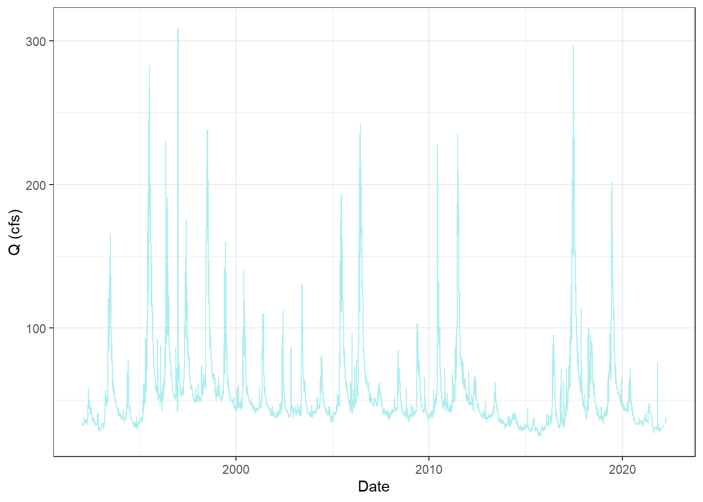

3 Results
3.1 Data Acquisition
##Surface water discharge data
site_ca <- "10265150"
q_ca <- readNWISdv(siteNumbers = site_ca,
parameterCd = '00060',
startDate = '1992-01-19',
endDate = '2022-04-06') %>%
rename(q_cfs = X_00060_00003) %>%
addWaterYear(.) %>%
select(-agency_cd, -X_00060_00003_cd) %>%
mutate(Site = "Hot CA Flume SW") %>%
select(-site_no)##Ground water data
gw_depth <- read_csv('gw_data.csv')## Rows: 10395 Columns: 3## -- Column specification ---------------------------------------------------------------------
## Delimiter: ","
## dbl (2): site, water_depth
## date (1): Date##
## i Use `spec()` to retrieve the full column specification for this data.
## i Specify the column types or set `show_col_types = FALSE` to quiet this message.gw_depth <- gw_depth %>%
mutate(Site = "Hot Creek GW") %>%
select(-site)##Climate Data
mam_climate <- read_csv('Date_Mammoth_climate.csv')## Rows: 9133 Columns: 3## -- Column specification ---------------------------------------------------------------------
## Delimiter: ","
## dbl (2): Avrg_T, Precip
## date (1): Date##
## i Use `spec()` to retrieve the full column specification for this data.
## i Specify the column types or set `show_col_types = FALSE` to quiet this message.3.2 Attribute Analysis
Groundwater Depth
ggplot(gw_depth, aes(x = Date, y = water_depth)) +
geom_line() +
ylab('Ground Water Depth (feet)') +
theme_bw()
Surface Water Discharge
ggplot(q_ca, aes(x = Date, y = q_cfs)) +
geom_line() +
ylab('Q (cfs)') +
theme_bw()
GW and SW Long
sw_gw <- left_join(gw_depth, q_ca, by = "Date")
sw_gw_graph <- ggplot() +
geom_line(data = sw_gw, aes(x=Date, y=water_depth*3), color = 'grey') +
geom_line(data = sw_gw, aes(x=Date, y=q_cfs), color = 'lightblue')
sw_gw_graph + scale_y_continuous(sec.axis = sec_axis(~./3)) +
theme_bw() +
ylab("GW Depth(F)") +
xlab("Date")## Warning: Removed 1 row(s) containing missing values (geom_path).
Temperature and Precipitation
t_annual <- mam_climate %>%
dplyr::mutate(month = month(Date),
year = year(Date)) %>%
group_by(year) %>%
summarize(Avrg_T = mean(Avrg_T, na.rm = T))
p_annual <- mam_climate %>%
dplyr::mutate(month = month(Date),
year = year(Date)) %>%
group_by(year) %>%
summarize(Precip = mean(Precip, na.rm = T))
t_p_annual <- cbind(t_annual, p_annual) %>%
select(-3)
ggplot(t_p_annual, aes(x=Avrg_T, y=Precip)) +
geom_point()
t_p <- ggplot() +
geom_line(data = mam_climate, aes(x=Date, y= Avrg_T), color = 'red') +
geom_line(data = mam_climate, aes(x=Date, y=Precip), color = 'blue')
t_p + scale_y_continuous(sec.axis = sec_axis(~./1)) +
theme_bw() +
ylab("Temp(F)") +
xlab("Date")
Monthly Water Trends
q_month_means <- q_ca %>%
dplyr::mutate(month = month(Date),
year = year(Date)) %>%
group_by(year, month) %>%
summarize(q_mean = mean(q_cfs, na.rm = T))## `summarise()` has grouped output by 'year'. You can override using the `.groups` argument.head(q_month_means) ## # A tibble: 6 x 3
## # Groups: year [1]
## year month q_mean
## <dbl> <dbl> <dbl>
## 1 1992 1 33.4
## 2 1992 2 34.7
## 3 1992 3 35.0
## 4 1992 4 35.4
## 5 1992 5 47.7
## 6 1992 6 44.5Discharge Trends for baseflow months
q_base <- q_month_means %>%
filter(month %in% c('7','8','9','10'))
ggplot(q_base, aes( x= year, y= q_mean)) +
geom_point(aes(color = factor(month))) +
scale_y_log10() +
ylab('Q (cfs)') +
xlab('Water Year')+
scale_color_brewer()
3.3 Statistical Trend Analysis
#Surface Water Discharge
mk.test(log10(q_month_means$q_mean))##
## Mann-Kendall trend test
##
## data: log10(q_month_means$q_mean)
## z = -5.3174, n = 362, p-value = 1.053e-07
## alternative hypothesis: true S is not equal to 0
## sample estimates:
## S varS tau
## -1.223400e+04 5.292618e+06 -1.872374e-01sens.slope(q_month_means$q_mean)##
## Sen's slope
##
## data: q_month_means$q_mean
## z = -5.3174, n = 362, p-value = 1.053e-07
## alternative hypothesis: true z is not equal to 0
## 95 percent confidence interval:
## -0.05192506 -0.02444720
## sample estimates:
## Sen's slope
## -0.03807232#Baseflow month trends
mk.test(log10(q_base$q_mean))##
## Mann-Kendall trend test
##
## data: log10(q_base$q_mean)
## z = -4.042, n = 120, p-value = 5.299e-05
## alternative hypothesis: true S is not equal to 0
## sample estimates:
## S varS tau
## -1.783000e+03 1.943657e+05 -2.497374e-01sens.slope(q_base$q_mean)##
## Sen's slope
##
## data: q_base$q_mean
## z = -4.042, n = 120, p-value = 5.299e-05
## alternative hypothesis: true z is not equal to 0
## 95 percent confidence interval:
## -0.27005610 -0.09705882
## sample estimates:
## Sen's slope
## -0.1851216#Ground Water Level
mk.test(log10(gw_depth$water_depth))##
## Mann-Kendall trend test
##
## data: log10(gw_depth$water_depth)
## z = 91.388, n = 10395, p-value < 2.2e-16
## alternative hypothesis: true S is not equal to 0
## sample estimates:
## S varS tau
## 3.228767e+07 1.248222e+11 5.980977e-01sens.slope(gw_depth$water_depth)##
## Sen's slope
##
## data: gw_depth$water_depth
## z = 91.388, n = 10395, p-value < 2.2e-16
## alternative hypothesis: true z is not equal to 0
## 95 percent confidence interval:
## 0.0002752903 0.0002838531
## sample estimates:
## Sen's slope
## 0.0002796025